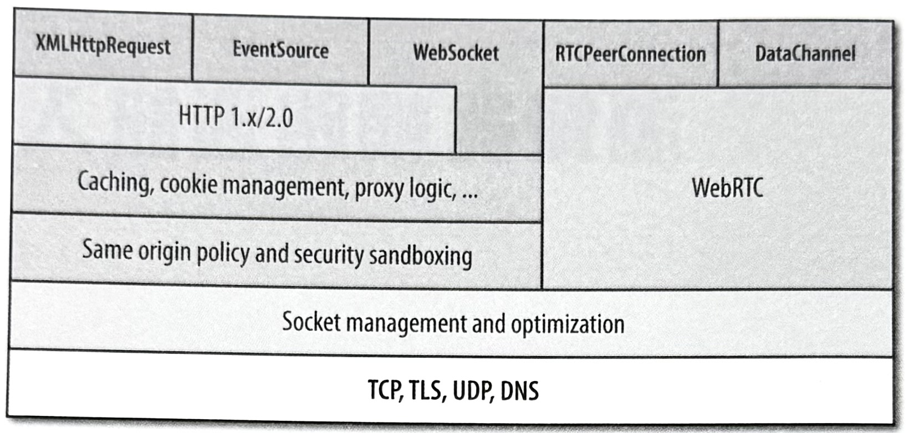
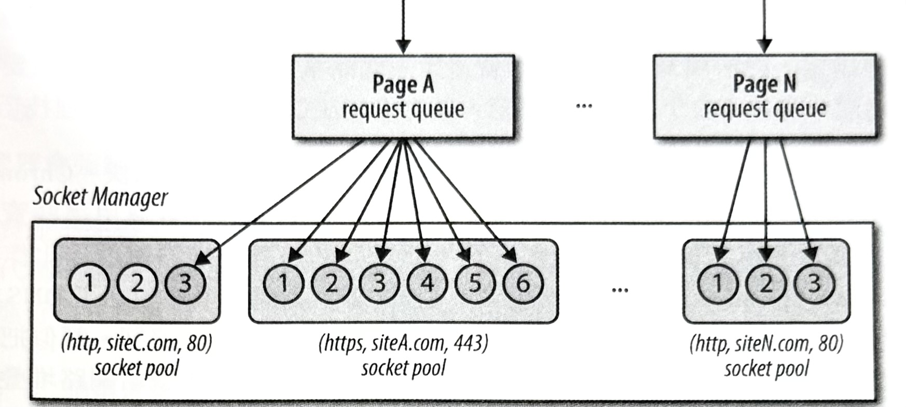
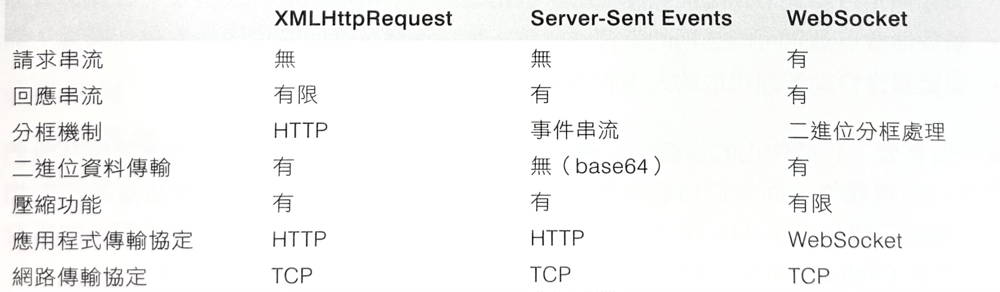

1-3-1 瀏覽器網路通訊入門
最新的瀏覽器都是針對網頁應用程式在快速、有效，且安全的傳輸需求上，所特別設計而成的一種平台。事實上，一個最新的瀏覽器其實就是一個含有數百個組成元素的完整作業系統：其中包含了，處理程序管理、安全沙盒機制、最佳化快取層級、JavaScript 虛擬機器、圖像渲染作業和 GPU 管線處理、儲存空間、感測器、音訊和視訊、網路通訊作業，以及其他各種功能和機制。
無疑的，瀏覽器的整體效能，以及透過它來執行的任何應用程式的運作效能，都是由許多組成元素來決定的：其中包括，解析作業、版面配置、HTML 和 CSS 的樣式計算程序、JavaScript 的執行速度、渲染管線作業，以及不可或缺的網路堆疊。每個組成元素都扮演著關鍵性的角色，但網路通訊作業則往往是其中更加關鍵且重要的部分，因為假如瀏覽器為了等待即將抵達的資源，而在網路上遭到阻斷的話，那所有的其他步驟也就全都會被堵住了！
因此，你顯然會發現到，一個最新瀏覽器的網路堆疊絕對不會只有一個簡單的套接介面管理程序（socket manager）而已。從表面上來看，它可能會以一個簡單的資源擷取機制的形式來呈現，但是從內部來看的話，它其實是個含有自己的最佳化標準、API，和各種服務的專屬平台（如圖-1）。
在設計網路應用程式時，我們不必去擔心有關個別 TCP 或 UDP 套接介面的部分：瀏覽器會為我們管理那個部分。此外，網路堆疊會負責運用正確的連線限制、對我們的請求進行格式化處理、對個別應用程式在彼此當中進行沙盒作業、運用代理伺服器、快取機制，以及各種處理作業。換句話說，在免除掉所有的這些複雜度之後，我們的應用程式就能聚焦在實際的應用程式邏輯上。
圖-1 ：高階瀏覽器網路通訊 APIs、協定與服務

然而，未被聚焦的部分並不表示就不做考慮！正如我們所看到的，瞭解 TCP、HTTP，和行動網路的效能特性，將有助於我們更快地建立起應用程式。同樣地，了解針對各種瀏覽器網路通訊 API、協定，和服務所進行的最佳化方式，將可以在任何應用程式的效能上，做出顯著的差異。
連線管理與最佳化方式
執行在瀏覽器當中的網路應用程式，並不負責管理個別網路套接介面（socket）的生命週期，而這樣的情況是好的。藉由把這項工作交付給瀏覽器來處理的方式，我們就能允許它去自動地執行一些關鍵性的效能最佳化處理作業，像是套接介面重複使用、請求優先權安排處理和延後綁定作業（late binding）、協定協商程序、連線限制強制處理，以及更多其他機制。事實上，瀏覽器刻意地將請求管理作業的生命週期，從套接介面管理作業（socket management）當中分離出來。這是個細微，卻很關鍵的區分方式。
「Sockets」（套接介面）是在原點（origin）所群組的共用池（pool）當中（如圖-2），被進行組織管理的，而每個共用池會強制處理它們自己的連線限制和安全約束狀況。待處理的請求會被進行佇列（queue）、優先權調整處理（prioritize），然後被綁定到共用池裡的個別 sockets 當中。因此，除非伺服器刻意關閉連線，否則同一個 socket 可以被自動地重複使用在多個請求當中！
圖-2 ：自動管理式的 Socket 共用池，會在所有瀏覽器程序當中被進行共用
-
原點（Origin）
由應用程式協定、網域名稱，和通訊埠號碼三個部分所組成。例如，(
http, www.example.com, 80) 和 (https, www.example.com, 443) 會被當作是不同的原點。 -
Socket 共用池（Socket pool）
隸屬於同一原點的一種 socket 群組。實際上，所有的主要瀏覽器都會把共用池的最大尺寸限制為六個 sockets。
自動化 Socket 共用池機制會自動重複使用 TCP 連線，以提供明顯的效能好處；相關細節請參考《持續存活連線的好處》。然而，除了這些以外，這個架構還具有許多額外的最佳化處理機會：
- 瀏覽器可以根據優先權次序，來對被佇列的請求進行處理。
- 瀏覽器可以重複使用 sockets 來讓延遲降到最低，並提高吞吐量。
- 瀏覽器可以主動地在預期的請求當中，開啟 socket。
- 瀏覽器可以在閒置 socket 被關閉的時候，進行最佳化處理。
- 瀏覽器可以跨所有 socket，對頻寬配置情況進行最佳化處理。
簡單來說，瀏覽器網路通訊堆疊是我們實現高效能應用程式的策略性夥伴。我們之前所談過的功能裡，沒有一個是需要我們自己去動手處理的！然而，那並不表示，我們就不能對瀏覽器進行協助。在我們的應用程式裡，決定網路通訊模式、傳輸類型和頻率、協定的選用，以及伺服器堆疊的調和最佳化處理等等的設計決策，在每個應用程式的最終效能上，都扮演著關鍵性的角色。
在 Google Chrome 裡的推測性網路最佳化方式
我們已經確定，最新瀏覽器的網路堆疊遠比一個簡單的 socket 管理程序還要複雜許多。然而，那並不表示最新的瀏覽器，就完全無法進行某些最佳化處理技巧。
舉例來說，Google Chrome 瀏覽器會隨著你的使用而變得越來越快。Chrome 會學習已造訪網站的佈局方式，以及典型的瀏覽器模式，然後會運用這些資訊，來執行專為預測可能的使用者操作情況，而設計的各種「推測性最佳化作業」（speculative optimizations），以便消除不必要的網路延遲：其中包括了 DNS 預先解析處理、TCP 預先連線、頁面預先渲染作業，以及其他類似機制。類似把滑鼠游標移到某個連結上的簡單動作，就可以從瀏覽器觸發一個訊號給網路堆疊「預測程序」（predictor），而這個機制可能會根據過去的效能資料，來選擇適合的最佳化方式！
更多相關細節，請參考之前在《瀏覽器最佳化方式》裡的討論內容。此外，要是你有興趣學習更多有關 Chrome 的網路最佳化方式的話，則可以參考《在 Google Chrome 裡的高效率網路通訊技術》（High Performance Networking in Google Chrome）網站文件（ http://hpbn.co/chrome-networking ）。
網路安全與沙盒處理機制
個別 socket 的委託管理工作有另一個重要目的：它讓瀏覽器能夠在未被信任的應用程式代碼上，進行沙盒處理（sandboxing），並強制執行一致的安全和政策限制。例如，瀏覽器不容許對未經處理的網路 socket 進行直接的 API 存取作業，因為那將會讓惡意的應用程式有機會，去對任何主機隨意地開啟連線——例如，執行通訊埠掃瞄、連結到信件伺服器，並開始發送未經規劃的訊息等等。
-
連接限制
瀏覽器會管理所有開啟的 socket 共用池，並強制執行連接限制，來保護客戶端和伺服器避免發生資源枯竭問題（resource exhaustion）。
-
請求格式和回應處理作業
瀏覽器會對所有對外請求進行格式化處理，以便強制執行一致且格式良好的協定語意，來保護伺服器。同樣地，回應解碼作業會被自動執行，以保護使用者不受惡意伺服器的傷害。
-
TLS 協商作業
瀏覽器會執行 TLS 交握程序，並執行必要的憑證驗證作業。一旦有任何的驗證失敗情況（例如，伺服器使用自我簽署憑證），使用者就會獲得警告。
-
同源策略
瀏覽器會強制約束，請求只能夠由應用程式開始發起，以及所要傳送的來源原點。
上述列表並不完整，但卻突顯出在處理工作裡的「最低對待」原則。瀏覽器只會針對應用程式代碼，揭露必要的 API 和相關資源：應用程式會提供資料和 URL，而瀏覽器會對請求進行格式化處理，並負責管理每個連線的整個生命週期。
值得注意的是，這裡頭不會只有一個唯一的「同源策略」。換句話說，在 DOM 存取作業、cookie 和議程狀態管理、網路通訊處理，和瀏覽器的其他組成元素上，會有一整組要去強迫限制的相關機制。
針對瀏覽器安全的完整討論，需要用到一本專書的篇幅才夠。假如你有興趣的話，可以參考 Michal Zalewski 所撰寫的《The Tangled Web: A Guide to Securing Modern Web Applications》（紊亂的網站：最新網頁應用程式安全指南）一書。
資源和客戶端狀態快取處理
最好且最快的請求，就是不做任何請求。在發送出某個請求之前，瀏覽器會自動檢查它的資源快取，並執行必要的驗證檢查，然後在符合指定條件的情況下，傳回資源的內部複本。同樣地，要是內部資源無法從快取當中取用的話，就會產生一個網路請求，而得到的回應則會被自動地存放到快取裡頭，以便後續在容許情況下進行存取。
- 瀏覽器會自動評估在每個資源上的快取指令。
- 瀏覽器會自動對可能過期的資源進行重新驗證作業。
- 瀏覽器會自動管理快取的大小和資源收回作業。
管理一個有效，且最佳化的資源快取機制，並不是件容易的事。所幸，瀏覽器會為我們處理所有的複雜性，而我們所要做的，就是確認我們的伺服器能夠回應適當的快取指令；相關細節請參考第
246 頁《在客戶端進行資源快取處理》。你會針對頁面上的所有資源，提供
Cache-Control
、
ETag
，以及
Last-Modified
回應標頭，對吧？
最後，一個經常被忽視，卻是瀏覽器的關鍵功能，就是要去提供驗證、議程，和 cookie 管理作業。瀏覽器會為每個原點保存個別獨立的「cookie 記錄」（cookie jars），並提供必要的應用程式和伺服器的 API，來讀取及寫入新的 cookie、議程，以及驗證資料，並且會自動附加與處理相對應的 HTTP 標頭，來讓我們的整個過程能夠被自動化處理。
針對把議程狀態管理工作委託給瀏覽器的好處部分，有個簡單明瞭的例子就是，一個驗證過的議程，可以被多個分頁或瀏覽器所共用，而且相反的情況也一樣；在其中一個分頁裡的登出動作，將會讓所有其他已開啟視窗裡頭的開啟議程全都失去效用。
應用程式的 API 和協定
更進一步地來看一下網路服務的提供方式上，我們最後會看到應用程式 API
和協定的部分。就像我們之前看過的那樣，較低的層級會提供重要服務的一個普遍陣列：包括，socket
和連線管理、請求和回應處理作業、各種安全政策的強制程序、快取處理機制，以及更多的其他服務。每當我們啟動一個
HTTP 或一個
XMLHttpRequest
、一個長期伺服器發送事件（Server-Sent Events, SSE）或 WebSocket 議程，或者是開啟一個
WebRTC 連線的時候，我們就是在與某些，或者是所有的這類底層服務進行互動。
沒有所謂最好的協定或 API。每個重要的應用程式都需要根據各種不同需求，來混合不同的傳輸方式：與瀏覽器快取、協定成本、訊息延遲、可靠度、資料傳輸類型，和更多的其他部分進行交互作用。某些協定可能會提供低延遲傳輸方式（例如，伺服器發送事件、WebSocket 等等），但是卻可能無法符合其他的重要標準——例如，在所有情況下，啟用瀏覽器快取，或者是支援有效的二進位傳輸方式的能力。
表-1 ：XHR、SSE 和 WebSocket 的高階功能
我們故意在這個比較表格當中忽略掉 WebRTC 的部分，因為它的點對點傳輸模型，與 XHR、SSE，和 WebSocket 協定所提供的方式截然不同。
這份高階功能的比較表並不完整（那是後續章節所要討論的主題），不過卻可以用來說明每個協定之間的諸多差異。瞭解每一種方式的優缺點和權衡之處，進而讓它們能符合我們的應用程式需求，就能在一個高效應用程式與一個對使用者完全缺乏經驗之間，做出完全不同的差異。